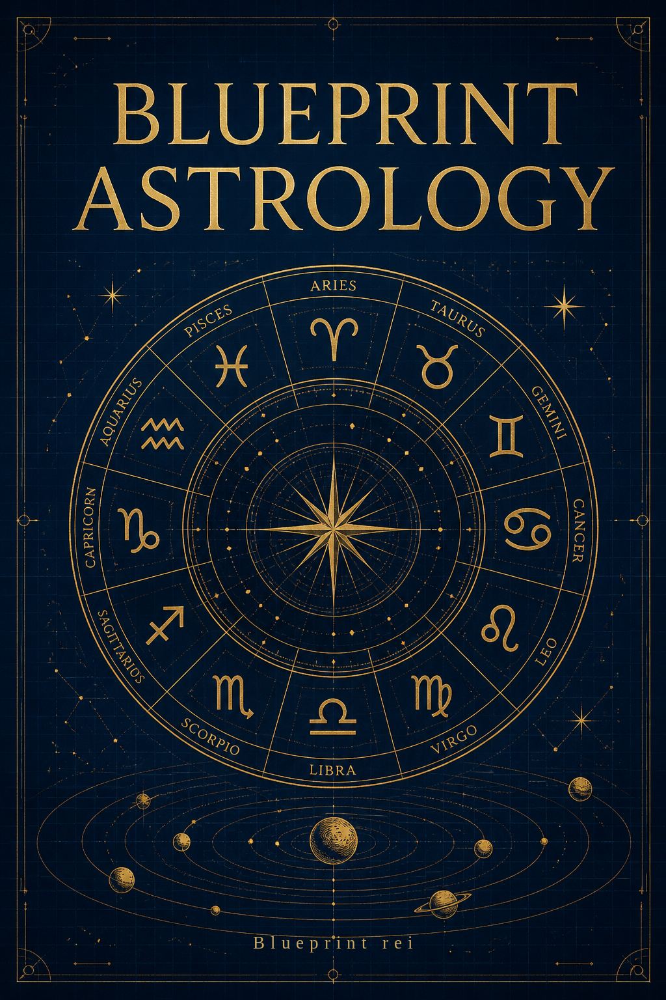
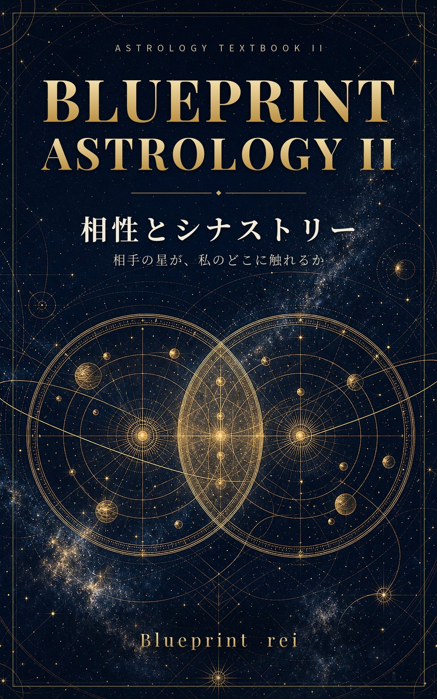

01
先着5名 モニター価格
お試し鑑定
西洋占星術でお悩み1つを丁寧に鑑定します
恋愛・仕事・人間関係・これからの流れ。今いちばん知りたいテーマをひとつ選んで、ネイタルチャートから丁寧に読み解きます。はじめて占星術を受ける方のための、短い鑑定です。
- 価格
- ¥1,500（税込）
- お届け目安
- 5日
- 内容
- お悩み 1テーマ
Western Astrology 鑑定歴8年
生まれてきた瞬間の空が、
あなたの人生の設計図。
自分を初めて許せる、
何があっても大丈夫と思える西洋占星術。
オンライン鑑定（ココナラ）・対面鑑定（宮城県東松島市周辺）
レイ Blueprint rei
About
はじめまして。Blueprint rei（ブループリント レイ）のレイです。西洋占星術の鑑定をはじめて8年、これまで口コミだけで、たくさんの方のネイタルチャートを読ませていただいてきました。
ネイタルチャートは、この世に身体を持って、地球（テラ）の空気を吸い込んだ瞬間のエネルギーが凝縮されたもの。そこに書かれているのは「良い・悪い」ではなく、その人が生まれ持った設計図そのものです。
「どうして私は、こうなんだろう」
と自分を責めていた私が、
占星術を学んで、
初めて自分を許せた。
自分を責めるかわりに、空を見上げて「そういう設計だったんだ」と思えること。同じように、まわりの人の在り方も、少し違って見えてくる。だから大丈夫。何があっても大丈夫——その視点を、あなたにも届けたいと思っています。
レイ／ Blueprint rei
Book
8年間の鑑定で伝え続けてきた読み方を、2冊の教科書にまとめました。
Amazon Kindle にて、日本語版・英語版ともに発売中です。

Vol. 01
自分を理解し、他者を理解する。
12サイン、10天体、12ハウスから、エッセンシャル・ディグニティ、相性（シナストリー）まで。8年間の鑑定で伝え続けてきた読み方を、一冊にまとめました。はじめてチャートを開く方にも、日々の読み返しにも。
Amazon Kindle 発売中

Vol. 02
相性とシナストリー ― 相手の星が、私のどこに触れるか
二人のホロスコープを重ねて読む「シナストリー」のテキスト。相手の星が私のチャートに入ることで、私のどこが、どう動くのか。ハウスオーバーレイ、天体同士のアスペクト、ディグニティとノードまで、実践のケーススタディとともに読み解きます。
Amazon Kindle 発売中・日本語版は Kindle Unlimited 対象
第2弾は、1冊目で使った言葉の定義をそのまま引き継いでいます。足したのは「重ね方」だけ。どちらから読んでも大丈夫です。
Connect
星のこと、日々のこと。気軽にのぞいてみてください。
「これからどうなるんだろう」
その問いから、鑑定ははじまります。